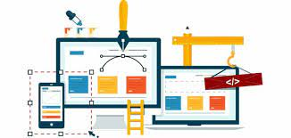

02/02/23
Hoy recordamos sobre lo que es una metodología, una metodología es para poder dar una solución de manera practica a alguna problematica ya que nos ayudara a maximizar la eficiencia al momento de estar programando como por ejemplo la Metodología Scrum.
También recordamos lo que son las herramientas para poder organizar de una buena manera las actividades y equipos es para tener un mejor orden, como por ejemplo la herramienta Kanba.
Nos enseñamos a subir nuestros códigos y estamos modificando el codigo anterior y a crear repositurios para nuestros trabajos.